SABAH SAŞE
Sabah için saşe
Enerji ve denge için
- L-Karnitin1.000 mg
- Konjak Glukomannan1.000 mg
- Karamuk Ekstresi200 mg
- Yeşil Çay Ekstresi200 mg
- Taurin200 mg
- L-Tirozin100 mg
- Krom200 mcg
LIVEXA'da iki ayrı formül var. Ambalajdaki adları SABAH SAŞE ve AKŞAM TABLET.
16 etken madde, iki formül, tek kutu. Aşağıda kutuda ne olduğunu, etken maddeleri etiketteki adlarıyla ve günlük kullanımı anlatıyoruz.
Satın al
16 etken madde · iki formül · tek kutu
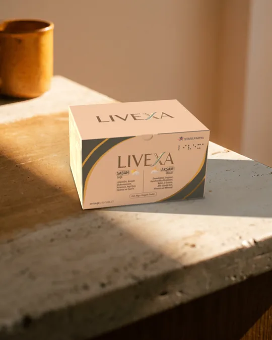
Kutuda 30 saşe ve 30 tablet birlikte bulunuyor.
Etikette iki ayrı günlük miktar var: günde 1 saşe ve günde 1 tablet. İkisi birlikte bir günlük kullanımı oluşturuyor.
Günlük porsiyon: 1 saşe + 1 tablet
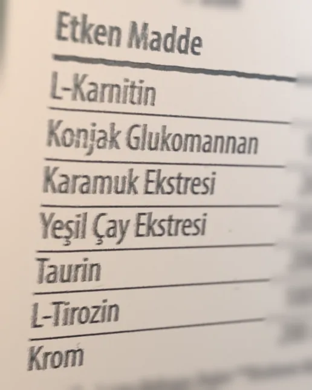
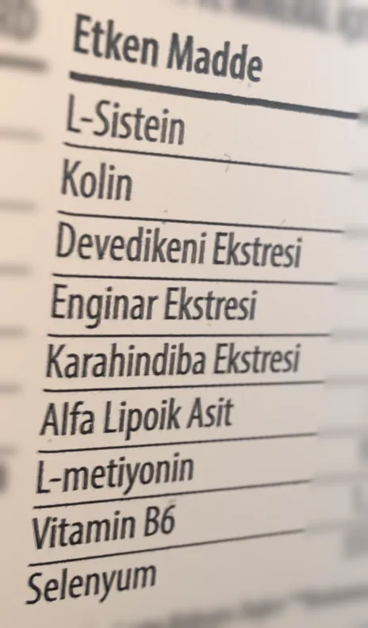
Sabah saşesi ve akşam tableti aynı kutuda duruyor. Ama etikette her birinin bilgisi ayrı yer alıyor.
Her formülün kendi bileşen tablosu, kendi bileşen listesi ve kendi T.E.G. Onay No'su (takviye edici gıda onay numarası) var: saşe için 027086, tablet için 027087.
İki tablodaki bileşenler birbirinden farklı. Aynı ad iki tabloda birden geçmiyor. Krom yalnızca sabah saşesinde var. Kolin, selenyum ve B6 vitamini yalnızca akşam tabletinde var.
Biçimleri de farklı. Etikete göre saşeyi 1 bardak suya (200 ml) karıştırıyorsunuz. Tablet için etiket günde 1 kere 1 tablet diyor.
"Sabah" ve "akşam", formüllerin ambalajdaki adları.
Her tablonun ilk sütununda Etken Madde başlığı var. Bileşenlerin adları bu sütunda yazıyor.
Sabah saşesinin tablosunda yedi, akşam tabletinin tablosunda dokuz ad var. Toplam 16 etken madde, hepsi aynı kutuda.
Bir satırı seçin; yakın planı ve kısa açıklaması açılır.
Kutunun yan yüzündeki beş satırı birlikte okuyalım:
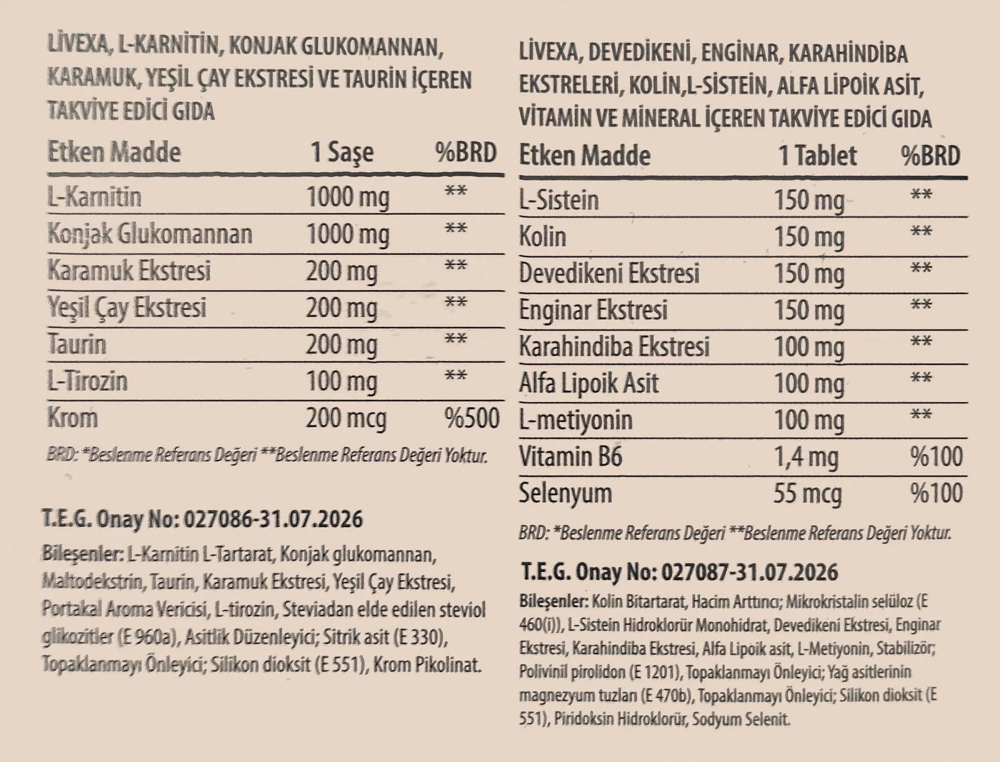
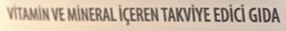
Akşam tableti tablosunun üstündeki satır, ürünün ne olduğunu söylüyor: vitamin ve mineral içeren takviye edici gıda.
Akşam tableti tablosunun ilk sütununda 9 etken maddenin adı yazıyor.
Sabah saşesi tablosunun ilk sütununda 7 etken maddenin adı yazıyor.
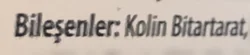
Tablonun altındaki liste, formüldeki her maddeyi etiketteki sırayla sayıyor. Katkı maddeleri de bu listede.
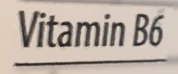
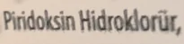
Tabloda Vitamin B6, listede Piridoksin Hidroklorür yazıyor. Uzun ad, B6 vitamininin formülde hangi biçimde bulunduğunu gösteriyor.
Aynı satırları elinizdeki kutunun yan yüzünde de bulabilirsiniz.
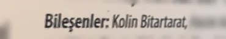
Etikette her formülün tablosunun altında bir de bileşen listesi var.
Tablo, formülün etken maddelerini sayıyor.
Bileşen listesi, formüldeki her maddeyi etiketteki sırayla sayıyor. Katkı maddeleri de bu listede.
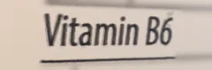
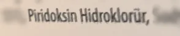
Listedeki bazı adlar tablodakilerden uzun. Uzun ad, bileşenin formülde hangi biçimde bulunduğunu gösteriyor. Tablodaki krom listede Krom Pikolinat, kolin Kolin Bitartarat, selenyum Sodyum Selenit, B6 vitamini Piridoksin Hidroklorür olarak geçiyor.
SABAH SAŞE
Bileşenler: L-Karnitin L-Tartarat, Konjak glukomannan, Maltodekstrin, Taurin, Karamuk Ekstresi, Yeşil Çay Ekstresi, Portakal Aroma Vericisi, L-tirozin, Steviadan elde edilen steviol glikozitler (E 960a), Asitlik Düzenleyici; Sitrik asit (E 330), Topaklanmayı Önleyici; Silikon dioksit (E 551), Krom Pikolinat.
AKŞAM TABLET
Bileşenler: Kolin Bitartarat, Hacim Arttırıcı; Mikrokristalin selüloz (E 460(i)), L-Sistein Hidroklorür Monohidrat, Devedikeni Ekstresi, Enginar Ekstresi, Karahindiba Ekstresi, Alfa Lipoik asit, L-Metiyonin, Stabilizör; Polivinil pirolidon (E 1201), Topaklanmayı Önleyici; Yağ asitlerinin magnezyum tuzları (E 470b), Topaklanmayı Önleyici; Silikon dioksit (E 551), Piridoksin Hidroklorür, Sodyum Selenit.
Parantez içindeki E ile başlayan kodlar, katkı maddelerinin numaraları.
Aynı iki listeyi elinizdeki kutunun yan yüzünde, tabloların altında da bulabilirsiniz.
LIVEXA bir takviye edici gıdadır. İçinde amino asitler (proteinlerin yapı taşları), bitki ekstreleri, vitaminler ve mineraller bulunur. Bunları iki ayrı formda bir araya getirdik.
SABAH SAŞE
Enerji ve denge için
AKŞAM TABLET
Karaciğer ve metabolik denge için
Dört tabak, tek masa: yumurta, balık, Antep fıstığı, brokoli ile tam tahıl ekmeği.
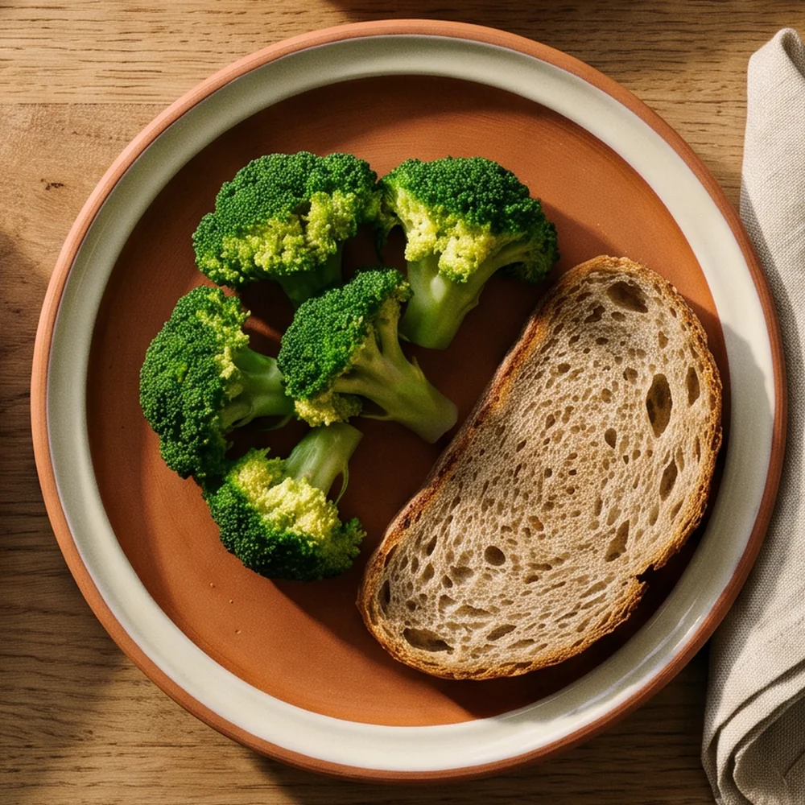
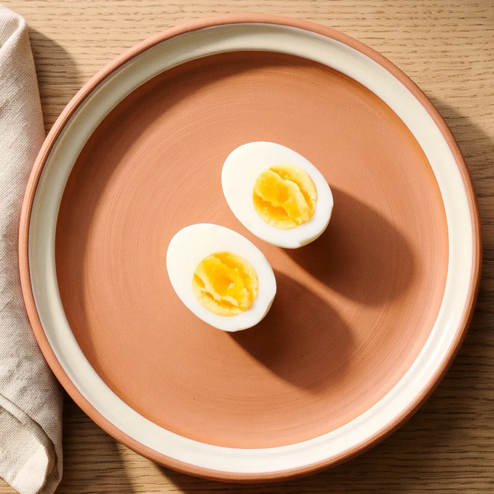
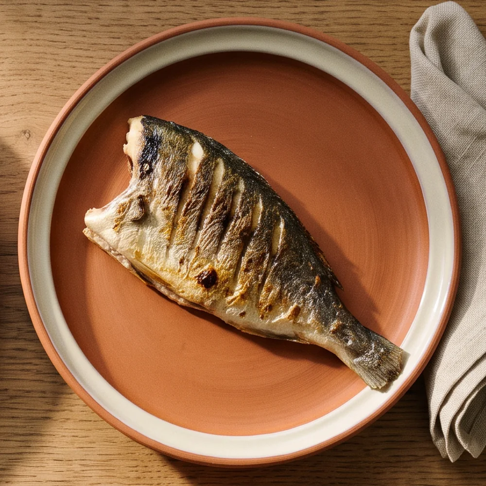
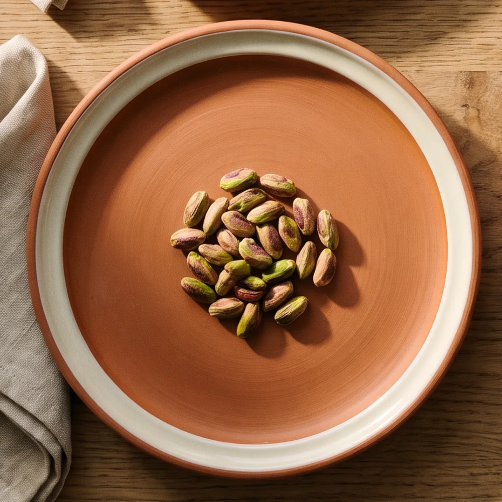
Besin bilgisi kaynakları: USDA FoodData Central (yumurta 173424, Antep fıstığı 170184). Balık, brokoli ve tam tahıl için Linus Pauling Institute, Micronutrient Information Center.
Sabah saşesindeki yedi, akşam tabletindeki dokuz bileşenin hepsi miktarıyla etikette yazıyor. Aşağıdaki iki tablo, ambalajdakilerin aynısı. Gizli bileşen yok, açıklanmayan miktar yok. Tablolardaki BRD, Beslenme Referans Değeri demek: bir yetişkinin günlük referans miktarı. Bileşenlerden dördünün resmî beyanını yukarıdaki kartlarda bulabilirsiniz.
SABAH SAŞE
| Etken Madde | 1 Saşe | %BRD |
|---|---|---|
| L-Karnitin | 1000 mg | ** |
| Konjak Glukomannan | 1000 mg | ** |
| Karamuk Ekstresi | 200 mg | ** |
| Yeşil Çay Ekstresi | 200 mg | ** |
| Taurin | 200 mg | ** |
| L-Tirozin | 100 mg | ** |
| Krom | 200 mcg | %500 |
AKŞAM TABLET
| Etken Madde | 1 Tablet | %BRD |
|---|---|---|
| L-Sistein | 150 mg | ** |
| Kolin | 150 mg | ** |
| Devedikeni Ekstresi | 150 mg | ** |
| Enginar Ekstresi | 150 mg | ** |
| Karahindiba Ekstresi | 100 mg | ** |
| Alfa Lipoik Asit | 100 mg | ** |
| L-metiyonin | 100 mg | ** |
| Vitamin B6 | 1,4 mg | %100 |
| Selenyum | 55 mcg | %100 |
** Beslenme Referans Değeri Yoktur.
Ambalajdaki listenin tamamı burada. Katkı maddeleri de var, sıra etiketteki gibi:
Sabah saşe: L-Karnitin L-Tartarat, Konjak glukomannan, Maltodekstrin, Taurin, Karamuk Ekstresi, Yeşil Çay Ekstresi, Portakal Aroma Vericisi, L-tirozin, Steviadan elde edilen steviol glikozitler (E 960a), Asitlik Düzenleyici; Sitrik asit (E 330), Topaklanmayı Önleyici; Silikon dioksit (E 551), Krom Pikolinat.
Akşam tablet: Kolin Bitartarat, Hacim Arttırıcı; Mikrokristalin selüloz (E 460(i)), L-Sistein Hidroklorür Monohidrat, Devedikeni Ekstresi, Enginar Ekstresi, Karahindiba Ekstresi, Alfa Lipoik asit, L-Metiyonin, Stabilizör; Polivinil pirolidon (E 1201), Topaklanmayı Önleyici; Yağ asitlerinin magnezyum tuzları (E 470b), Topaklanmayı Önleyici; Silikon dioksit (E 551), Piridoksin Hidroklorür, Sodyum Selenit.
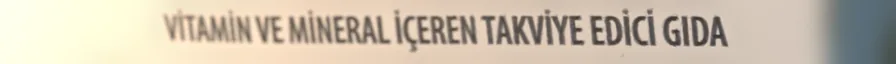
Etikette ürün takviye edici gıda olarak tanımlanıyor.
Her formülün etiketinde bir tablo, altında bileşen listesi ve T.E.G. Onay No'su var.
Tabloların miktarlarla birlikte tam hâli Künye ve satıcı bilgileri sayfasında, "Etiket bilgileri" bölümünde.
Bileşenleri, etiketin nasıl okunduğunu ve sofradan sahneleri Instagram ve Facebook'ta da paylaşıyoruz; takip etmek isterseniz: Instagram @livexatr (yeni sekmede açılır) · Facebook Livexa (yeni sekmede açılır)
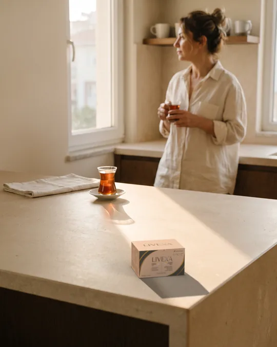
SABAH SAŞE
"Takviye edici gıda olarak günde 1 saşenin 1 bardak suya (200ml) karıştırılmasıyla kullanılması önerilir."
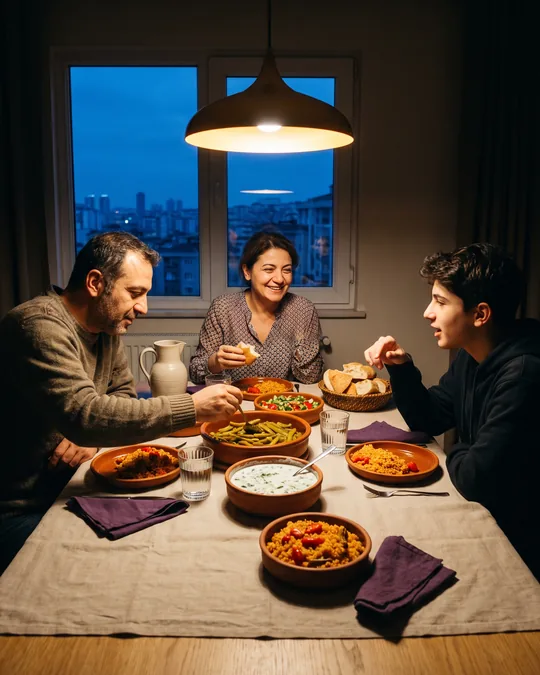
AKŞAM TABLET
"Takviye edici gıda olarak günde 1 kere 1 tablet kullanılması önerilir."
Etikette, günün hangi saatinde ya da hangi öğünde kullanılacağı yazmıyor.
Günlük porsiyon: 1 saşe + 1 tablet
Tavsiye edilen günlük porsiyonu aşmayın.
11 yaş ve üzeri kullanım için uygundur.
Kutuda 30 saşe ve 30 tablet var.
Satın alTirozin metabolizma bozukluğu olan kişiler tarafından kullanılmamalıdır.
Bu uyarı, formülde L-tirozin olduğu için yazılı. L-tirozin sabah saşesinde.
Hamilelik ve emzirme dönemi ile hastalık veya ilaç kullanılması durumlarında doktorunuza danışın.
Tavsiye edilen günlük porsiyonu aşmayın.
Çocukların ulaşamayacağı yerde saklayın.
Takviye edici gıdalar normal beslenme yerine geçemez.
Saklama koşulları: 25 C altında kuru ve serin yerde muhafaza ediniz.
Takviye edici gıdadır. İlaç değildir. Hastalıkların önlenmesi veya tedavi edilmesi amacıyla kullanılmaz.
T.E.G. Onay No her formülün tablosunun altında, diğer kayıt bilgileri kutunun künye panelinde basılı.
T.E.T.T. ve P.NO her kutunun künye panelinde basılı. Tarih partiden partiye değiştiği için burada yazmıyoruz; geçerli tarih, elinizdeki kutunun üzerindeki tarihtir.
| Alan | Değer |
|---|---|
| T.E.G. Onay No — sabah saşe | 027086 · 31.07.2026 |
| T.E.G. Onay No — akşam tablet | 027087 · 31.07.2026 |
| İşletme Kayıt No | TR-06-K-074972 |
| Barkod | 8685119165127 |
| T.E.T.T. ve P.NO | Her kutunun künye panelinde basılıdır |
| İçerik | 30 saşe / 30 tablet |
| Menşe Ülke | Türkiye (Takviye edici gıdanın ana bileşeninin menşei, ürünün menşe ülkesinden farklıdır.) |
| Saklama koşulu | 25 C altında kuru ve serin yerde muhafaza ediniz. |
Ürün sahibi
Stars Farma İlaç Medikal Ticaret Pazarlama Limited Şirketi
Konak Mah. 157.Sok. No:8/3 Yatağan/Muğla
İki formül, tek kutu.


Reklamlarımızın sonuçlarını ölçmek ve reklamlarımızı daha uygun kişilere göstermek için Meta'nın (Facebook, Instagram) pazarlama çerezlerini kullanmak istiyoruz. İzin verirseniz ziyaret ve sipariş bilgileriniz Meta'ya iletilir; vermezseniz site aynı şekilde çalışır.